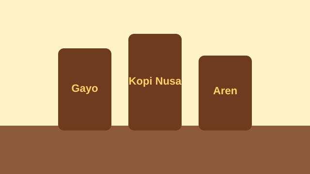
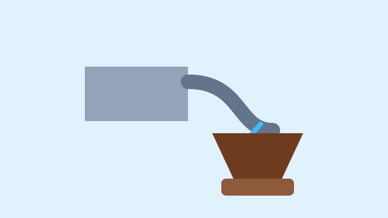

GALERI KOPI NUSA
Keindahan di Setiap Proses
Dari kebun hingga cangkir, setiap langkah adalah cerita tentang kerja keras, alam, dan cinta pada kopi.
Jelajahi ProdukCERITA VISUAL KAMI
Di Balik Setiap Cangkir
Kenali produk dan proses penyeduhan yang menghadirkan pengalaman kopi yang istimewa.

Pilihan kopi untuk menemani aktivitas sehari-hari dan waktu santai.

Penyeduhan yang cermat membantu menghadirkan karakter rasa kopi.

Nikmati kopi sebagai teman bekerja, belajar, atau bersantai.
PILIHAN KAMI
Temukan Paket Favoritmu
Temukan pilihan paket yang sesuai dengan kebutuhan Anda.
- Paket Seduh Rumahan Untuk menikmati kopi di rumah.
- Paket Kantor Mingguan Pilihan untuk menemani aktivitas kerja.
- Paket Tester Untuk mengenal pilihan produk Kopi Nusa.
INFORMASI PRODUK
Daftar Harga
Berikut contoh pilihan produk dan harga Kopi Nusa. Silakan hubungi kami untuk konfirmasi ketersediaan.
| Produk | Ukuran | Harga |
|---|---|---|
| Kopi Tubruk Signature | 250 gram | Rp45.000 |
| Cold Brew Aren | Botol 250 ml | Rp22.000 |
Harga di atas merupakan data contoh untuk keperluan proyek.
SECANGKIR KEHANGATAN
Mari Temukan Kopi Favoritmu
Kunjungi halaman kontak untuk melihat informasi pemesanan atau mengirim pertanyaan kepada Kopi Nusa.
Hubungi Kopi Nusa